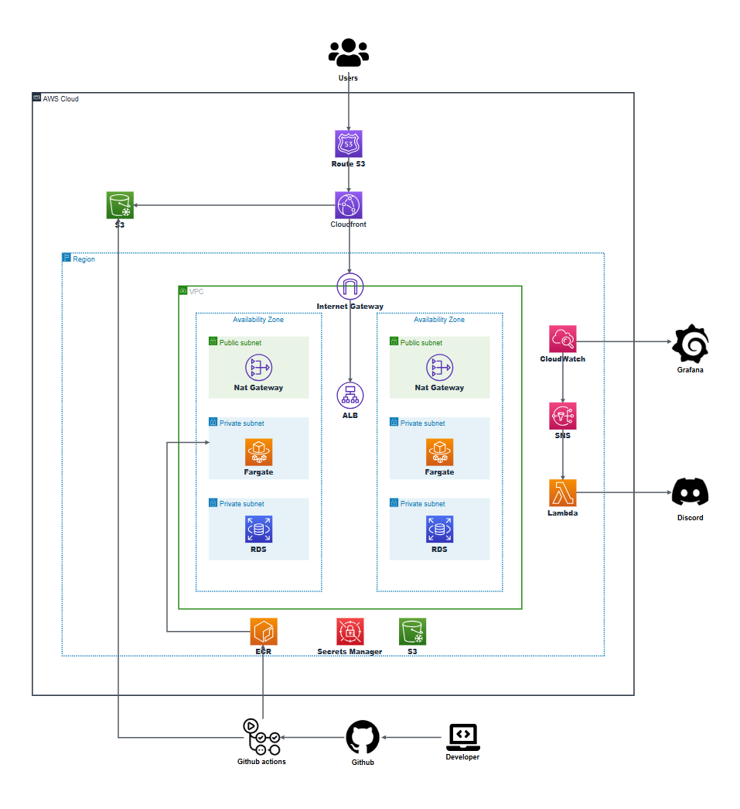

Wooriteam
대학생·비전공자를 위한 역할 중심 팀 프로젝트 구인 플랫폼입니다.
문제정의 · 목표 · MVP
문제 정의
대학생·비전공자가 팀 프로젝트 팀원을 구할 때 에브리타임, 오픈카톡방, 디스코드 등 비공식 채널에 의존하는 상황을 해결하고자 했습니다.
구인 채널의 분산
원하는 역할을 모집하는 팀을 찾으려면 여러 채널을 동시에 확인해야 함
역할 기반 필터링 불가
공고가 프로젝트 단위로 게시되어 "백엔드만" 골라보기 어려움
높은 진입 장벽
유사 플랫폼이 현업 경력자 중심 분위기라 대학생이 지원을 망설임
낮은 신뢰도
모집자 소속을 알 수 없어 팀 합류 후 잠수 이탈 등의 문제 발생
프로젝트 목표
비즈니스 목표: 역할별 모집공고를 체계적으로 게시·지원할 수 있는 전용 서비스로, 대학생·비전공자 타겟의 진입 장벽을 낮춘다.
- 역할 탭 기반의 직관적인 팀원 구인 플랫폼 제공
- 소속 그룹·공개 프로필을 통한 신뢰도 보완 장치 제공
- 무중단 배포·자동 복구·관찰 가능성을 갖춘 안정적인 클라우드 인프라 구성
MVP 기능 우선순위 (MoSCoW)
| 구분 | 기능 |
|---|---|
| Must | 역할 탭 분류(백엔드/프론트엔드/디자인/기획), 공고 CRUD·마감 처리, 역할별 지원 폼 제출·지원자 목록 조회, 회원 기능 |
| Should | 게시자 필터링(난이도·기술스택·모집유형), 회원 프로필 공개, 공고 키워드 검색 |
| Could | 지원자 필터링, 공고 자동 마감(스케줄러), 북마크, 신고/스팸 처리, 그룹 기능 |
기술 구성
| 영역 | 기술 | 선택 이유 |
|---|---|---|
| Backend | Spring Boot, Spring Security + JWT | 기존 프로젝트 경험 활용, 안정적인 인증 체계 |
| Frontend | React + TypeScript, Vite | 컴포넌트 기반 역할 탭 UI 구현에 적합 |
| Database | MySQL (RDS) | 공고-역할-지원 1:N 관계형 구조에 적합 |
| Infra | ECS Fargate, ALB, RDS, Secrets Manager, ECR, CloudFront, S3 | 서버리스 컨테이너 운영 + 정적 자원 분리로 비용·운영 효율화 |
| IaC | Terraform | 환경 간 일관성 보장, 재현 가능한 인프라 |
| CI/CD | GitHub Actions (3-워크플로 분리) | PR 단계 품질 게이트 + 배포 자동화 |
| 모니터링 | CloudWatch, Grafana Cloud, Discord(SNS+Lambda) | 메트릭 시각화 및 실시간 알림 |
도메인 모델은 User, UserProfile, Post, PostRole, Application, Group, GroupMember, Bookmark, Report 총 9개 엔티티로 설계했습니다. 하나의 Post가 여러 PostRole(역할)을 가질 수 있도록 분리해, 공고 하나가 여러 역할 탭에 동시에 노출되는 구조를 구현했습니다.
아키텍처 & 기술 선택

프론트엔드(S3)와 백엔드 API(ALB)를 CloudFront 하나의 도메인으로 통합 노출해 CORS 문제를 근본적으로 해결. S3는 OAC로만 접근 허용해 퍼블릭 접근 차단
CloudFront가 주입하는 커스텀 헤더가 없는 요청에는 403 고정 응답을 반환하도록 설계해 ALB DNS 직접 접근을 차단
CPU 70% 초과 3분 지속 시 스케일 아웃(최대 6개), 40% 미만 5분 지속 시 스케일 인(최소 2개). Graceful Shutdown과 ALB Deregistration Delay를 동일하게 맞춰 요청 유실 방지
Primary 장애 시 Standby로 자동 승격. HikariCP 커넥션 풀을 태스크당 10개로 설정, max_connections는 100으로 여유분 확보
DB 자격증명·JWT 서명 키·CloudFront 헤더 난수값을 암호화해 중앙 관리, ECS Task Definition의 secrets 블록으로 직접 주입
ECS/ALB/RDS 메트릭·로그를 수집하고 9패널 대시보드로 시각화, 임계값 초과 시 SNS → Lambda → Discord로 실시간 알림
PR 단계에서 백엔드/프론트엔드를 각각 검증하고, main 머지 후 변경된 영역만 자동 배포해 불필요한 재배포 방지
VPC부터 ECS, RDS, CloudFront, 모니터링까지 전체 인프라를 코드로 관리해 환경 간 일관성과 재현 가능성 확보
핵심 구현 기능
서비스 기능
회원 기능
이메일·비밀번호 기반 인증, JWT 발급 및 토큰 블랙리스트로 로그아웃 처리. 가입/로그인/로그아웃/탈퇴, 비밀번호 변경
모집공고
Post와 PostRole 분리 설계로 하나의 공고가 여러 역할 탭에 동시 노출. 난이도·모집유형·기술스택 필터링, 키워드 검색, 마감일 경과 시 매일 자정 자동 마감
지원
역할별 지원 폼 제출(지원동기/기술스택/경험/연락처), 게시자만 지원자 목록 조회 가능, 지원 철회는 소프트 삭제로 재지원 시 복원
마이페이지 / 프로필 / 그룹 / 신고
내가 올린·지원한 공고, 북마크, 내 그룹 관리. 공개 설정 회원만 프로필 노출, 그룹 생성 1개·가입 최대 3개 제한, 비회원도 신고 가능
클라우드 인프라 설계 (Terraform)
| 계층 | 서브넷(예시) | 위치 리소스 |
|---|---|---|
| Public | 10.0.1.0/24, 10.0.2.0/24 | ALB, NAT Gateway |
| Private | 10.0.11.0/24, 10.0.12.0/24 | ECS Fargate |
| DB | 10.0.21.0/24, 10.0.22.0/24 | RDS |
VPC CIDR는 10.0.0.0/16이며, 보안 그룹은 인터넷 → alb-sg → ecs-sg → rds-sg 단방향 체인 구조로 구성해 CIDR 참조 없이 SG ID 참조 방식만 사용했습니다.
- ECS Fargate: 0.5 vCPU / 1024MB, 기본 태스크 2개(2a/2c 분산), Auto Scaling 2~6개
- RDS MySQL 8.0: db.t3.micro, Multi-AZ, gp3 20GB(최대 100GB Auto Scaling), 백업 보존 7일
- ECR: sha- 태그 최신 10개만 보관, untagged는 1일 후 자동 삭제
- ECS Task Execution Role, CI/CD 전용 IAM User를 최소 권한 원칙으로 설계
CI/CD 파이프라인
| 워크플로 | 트리거 | 역할 |
|---|---|---|
| ci.yml | PR 오픈·커밋 푸시 | 변경 경로 기준 백엔드/프론트엔드 job 분기 실행 |
| cd.yml | main push (백엔드 경로) | Docker 빌드 → Trivy 스캔 → ECR 푸시 → ECS 롤링 배포 → 스모크 테스트 → 자동 롤백 |
| cd-frontend.yml | main push (frontend/**) | Vite 빌드 → S3 동기화 → CloudFront 캐시 무효화 |
- 백엔드 CI: JaCoCo 커버리지 60% 미만 시 PR 머지 차단
- Trivy 이미지 스캔: CRITICAL 취약점 발견 시 배포 중단
- 스모크 테스트:
GET /actuator/health200 확인(10회×10초 재시도), 실패 시 이전 Task Definition으로 자동 롤백 - Discord 알림: 배포 성공/실패 결과, 트리거 커밋 메시지·SHA 포함 발송
운영 & 검증
운영 체크리스트
배포 전
- 로컬 gradlew/npm build 통과 확인
- Secret/환경변수 확인
배포 중
- ECS 서비스 stable 대기 (10분 타임아웃)
- GitHub Actions 진행 상황 모니터링
배포 후
- 스모크 테스트 200, 5분간 5xx 없음
- 주요 API 기능 테스트
terraform output으로 ALB_DNS·CloudFront ID 등을 확인해 GitHub Secrets를 갱신하고, 갱신 이전에 진행 중이던 런의 실패는 시간 순서만 확인하고 무시합니다.모니터링
CloudWatch(메트릭/로그/알람) + Grafana Cloud(시각화) + Discord(SNS→Lambda 실시간 알림) + GitHub Actions→Discord(배포 결과 알림) 4단 체계로 운영합니다. 총 11개 알람 중 대표 항목은 ECS CPU 70%/90% 초과, ALB 5xx 급증, RDS 커넥션 과다·스토리지 부족입니다.
테스트 결과 (k6 부하테스트)
| 단계 | 목적 | 최대 VU | 처리량 | p95 | 에러율 |
|---|---|---|---|---|---|
| Smoke | 기본 동작 확인 | 3 | 5.3 req/s | 153.31ms | 0% |
| Load | 평상시 부하(4분) | 20 | 16.8 req/s | 47.03ms | 0% |
| Stress | 한계 부하 + Auto Scaling 확인 | 100 | 123.9 req/s | 37.55ms | 0.00%(1/74,478) |
비용 분석
| 서비스 | 사양 | 월별 |
|---|---|---|
| ECS Fargate | 0.5 vCPU × 1GB × 2태스크 | $15 |
| RDS MySQL | db.t3.micro Multi-AZ | $30 |
| ALB | 기본 + LCU | $20 |
| NAT Gateway | 2개 | $70 |
| ECR / Secrets Manager | 이미지 / 시크릿 3개 | $3 |
| CloudWatch / S3 / CloudFront / Route53 | 로그·대시보드·정적자산 | $10.5 |
| 합계 | 약 $147~148/월 | |
NAT Gateway를 VPC Endpoint(ECR, S3, Secrets Manager, CloudWatch)로 전환하면 약 $20 절감이 가능하며, 개선 계획에 포함했습니다.
트러블슈팅
프론트엔드 빌드 실패 — TS6133 (미사용 변수)▸
원인
삭제 핸들러가 정의되어 있었지만 UI에 연결되지 않아 tsc 빌드에서 미사용 변수로 잡힘
해결
'내가 올린 공고' 카드 UI에 삭제 버튼을 추가해 핸들러를 실제로 연결
백엔드 테스트 실패 — JavaMailSender 빈 없음▸
원인
테스트 환경설정에 spring.mail.host가 없어 MailSenderAutoConfiguration이 빈을 생성하지 못해 ApplicationContext 로딩 실패
해결
테스트 설정에 더미 mail 설정과 app.mail.enabled: false를 추가
CD — Trivy 이미지 스캔에서 CRITICAL 취약점 발견▸
원인
Spring Boot가 번들하는 Tomcat 버전에 CRITICAL 취약점 포함
해결
build.gradle에 번들 Tomcat 버전을 오버라이드하도록 추가
Infra — ECS 태스크 기동 직후 즉시 종료 반복▸
원인
ddl-auto: validate 상태에서 새로 생성된 빈 RDS에는 테이블이 없어 Hibernate 스키마 검증이 즉시 실패
해결
최초 배포·RDS 재생성 시 update로 변경해 테이블을 자동 생성하도록 설정
CD — terraform apply 후 GitHub Secrets 미갱신으로 연쇄 실패▸
원인
ALB/CloudFront 재생성 시 식별자가 바뀌는데 GitHub Actions는 워크플로 시작 시점의 시크릿 값을 사용해 옛 값으로 실패
해결
terraform apply 직후 output 기준으로 시크릿을 갱신한 뒤 새 런을 트리거하는 운영 체크리스트 수립
Infra — k6 부하테스트 시 ALB 직접 호출 403 및 헬스체크 한계▸
원인
"CloudFront 경유 트래픽만 허용" 정책으로 ALB DNS 직접 호출은 403 고정 응답
해결
BASE_URL을 CloudFront 도메인으로 변경. 단 CloudFront 경유 시 /actuator/health가 ALB가 아닌 S3로 라우팅되어 프론트 응답이 200으로 잡히는 한계는 별도 개선 과제로 남김
Mail Health Indicator로 인한 /actuator/health DOWN 유발▸
원인
JavaMailSender 빈이 있으면 Actuator가 MailHealthIndicator를 자동 등록해 메일 인증 실패가 헬스 status를 DOWN으로 끌어내릴 수 있음
해결
management.health.mail.enabled: false를 추가해 메일 발송 여부와 헬스체크를 분리
신고 알림 메일 배포 환경 미발송▸
원인
로컬 .env는 ECS 환경에 영향이 없고, 메일 관련 환경변수가 Task Definition에 주입되어 있지 않았음
해결
메일 환경변수를 ecs.tf에 추가하고 민감값은 Secrets Manager에서 참조하도록 구성 후 신규 리비전 강제 등록
Terraform State 파손▸
원인
S3 버킷을 콘솔에서 실수로 비워 tfstate 파일이 삭제되었고, 버전 관리가 미설정이라 복구 불가
해결
DynamoDB 체크섬 수동 삭제 후 전체 리소스를 수동 정리하고 재구성, 이후 S3 버킷에 버저닝 활성화
받은 피드백 & 개선 사항
멋쟁이사자처럼 22기 개인 프로젝트 멘토 피드백을 기반으로 정리했습니다. 한 달 개인 프로젝트에서 Multi-AZ, ECS Fargate, Terraform IaC, Trivy 보안 스캔, 스모크 테스트 기반 자동 롤백, k6 3단계 부하테스트까지 구성하고 실제 배포·검증까지 마친 점을 좋게 평가받았습니다. 특히 트러블슈팅을 "증상"이 아니라 "원인 → 해결"로 문서화한 점이 강점으로 꼽혔습니다.
잘한 점
| 도메인 설계 | Post/PostRole 분리로 "공고 하나가 여러 역할 탭에 동시 노출"되는 기획 의도를 데이터 모델 레벨에서 정확히 구현 |
| 네트워크 보안 패턴 | 커스텀 헤더로 ALB 직접 접근 차단 — 실무에서 실제 쓰이는 패턴이며, k6 트러블슈팅에서 "정책이 의도대로 동작함"까지 검증 |
| 배포 안정성 3종 세트 | Trivy(CRITICAL 배포 차단) + 스모크 테스트 + 자동 롤백으로 "실패 시 대응"까지 설계 |
| 트러블슈팅 문서 퀄리티 | 증상·원인·해결이 분리되어 있고, Terraform state 파손 건에서는 교훈(버저닝 필수)까지 도출 |
지금 바로 잡으면 좋은 것
① 스모크 테스트가 실제로 백엔드를 검증하지 못하는 문제 (가장 중요)
발견된 문제
- CloudFront가 /*를 SPA로 보내 헬스체크를 CloudFront 도메인으로 호출하면 백엔드가 죽어도 SPA 폴백이 200을 반환 — 자동 롤백이 무력화됐을 가능성
해결 방향
- 헬스체크는 X-From-CloudFront 헤더를 실은 채 ALB에 직접 호출하거나 /api/* 경로로 확실히 ALB를 태움
- 응답 코드뿐 아니라 응답 바디의 status: UP 여부까지 검증
② ECS 태스크 2개 환경의 "분산 함정"
발견된 문제
- @Scheduled 배치가 태스크마다 각각 실행되어 하루 두 번 실행될 수 있음
- JWT 로그아웃 블랙리스트가 인메모리라면 태스크 간 로그아웃이 새는 보안 버그 가능
해결 방향
- ShedLock으로 단일 실행 보장 또는 EventBridge Scheduled Task로 분리
- 블랙리스트는 Redis/DB 같은 공유 저장소로 이전
③ ddl-auto: update를 프로덕션에 상시로 남겨둔 것
발견된 문제
- update를 상시로 두면 파괴적 스키마 변경을 자동 시도해 데이터 유실 위험
해결 방향
- 최초 1회만 update로 테이블 생성 후 validate로 되돌리고, 이후엔 Flyway/Liquibase로 버전 관리
④ Auto Scaling이 "설계"만 되고 "검증"은 안 됨
발견된 문제
- stress 테스트에서 CPU가 순간 스파이크에 그쳐 스케일 아웃 임계값(3분 유지)이 트리거되지 않았을 가능성
해결 방향
- Grafana에 RunningTaskCount 패널 추가, VU·지속시간을 늘려 재실행 후 스케일 아웃 증거 확보
⑤ "너무 좋은 숫자"가 오히려 질문을 부름
발견된 문제
- 부하가 커질수록 p95가 낮아진 점, stress에서도 서버가 사실상 여유로웠던 점 — 읽기 위주 테스트였다는 한계
해결 방향
- 쓰기(공고 등록/지원 제출) 시나리오를 섞어 실제 서비스 부하에 가깝게 보완
조금 더 깊이 가면 좋은 것
- 비용 관점 보완: NAT Gateway 2개 + RDS Multi-AZ + 상시 태스크 2개로 NAT 비용만 월 6만 원 이상 — VPC Endpoint 전환 검토
- 비회원 신고 엔드포인트 남용 방지: Rate limiting, hCaptcha, 비동기 큐+스로틀링 검토
- 보안 심화: 로그인 brute force 방어, 비밀번호 해싱 방식 명시, JWT refresh 전략 보강
- Multi-AZ RDS Failover 실측: 설계는 되어 있으나 콘솔에서 실제 승격·다운타임을 측정한 적은 없음
예상 면접 질문
운영 / DB
- ddl-auto를 update로 두셨는데 운영 DB에서 괜찮나요?
- 스키마 마이그레이션은 어떻게 관리하나요?
- Multi-AZ RDS failover를 실제로 테스트해보셨나요?
분산 환경
- 태스크가 2개인데 @Scheduled 자동 마감이 두 번 돌지 않나요?
- 로그아웃 블랙리스트는 어디에 저장하셨나요?
검증
- stress 테스트에서 Auto Scaling이 실제로 동작했나요?
- 스모크 테스트가 200을 받으면 정말 백엔드가 살아있는 걸 보장하나요?
- NAT Gateway 비용 최적화는 고려하셨나요?
회고
고안한 아이디어를 서비스로 구현하고 AWS 인프라로 배포하는 과정까지 하나하나 고민하며 많은 것을 얻었습니다. Must뿐 아니라 Should·Could 기능까지 대부분 구현하고 실제 배포·CI/CD·부하테스트까지 완성했다는 점이 만족스러웠습니다. 다만 보안 파트와 Terraform state 관리 기초(버저닝)를 처음부터 챙기지 못한 점은 아쉬움으로 남습니다. 앞으로 체크리스트를 순서대로 반영해 보안·관찰 가능성·검증의 빈틈을 메우고, 이 문서 자체를 지속적으로 갱신해 나갈 계획입니다.